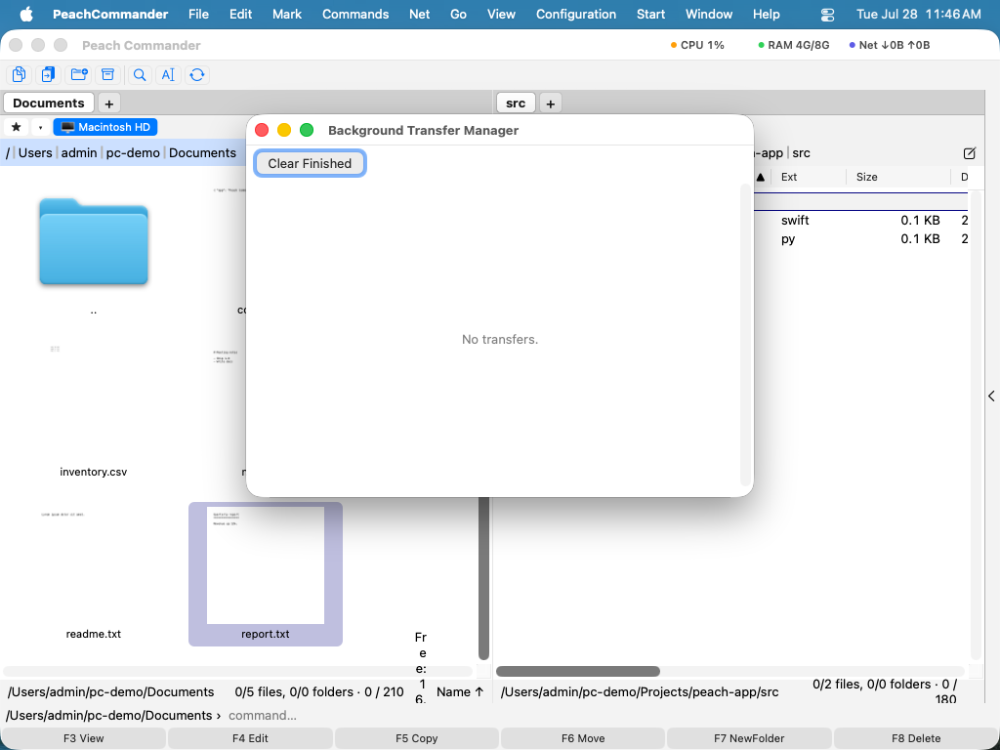

Prenosy na pozadí
Veľké kopírovania, presúvania, mazania a sťahovania nemusia zdržiavať vašu prácu. Peach Commander ich dokáže spustiť na pozadí a zhromaždiť ich všetky na jednom mieste: v Správcovi prenosov na pozadí. Odtiaľ sledujete priebeh a rýchlosť prenosu každej úlohy, pozastavíte alebo obnovíte ju, zrušíte ju alebo zoradíte úlohy na neskoršie spustenie. Keďže úloha na pozadí beží sama, nikdy vás nezastaví od prehliadania, otvárania súborov alebo spustenia ďalšieho prenosu.
Ako na to
- Začnite kopírovanie, presun, mazanie alebo sťahovanie a vyberte spustenie na pozadí. Úloha sa objaví v Správcovi prenosov na pozadí.
- Otvorte správcu kedykoľvek z Príkazy ▸ Správca prenosov na pozadí… (alebo stlačte Cmd+Shift+B).
- Každá úloha zobrazuje názov, ukazovateľ priebehu a živý riadok s hotovými súbormi, prenesenými bajtmi a aktuálnou rýchlosťou.
- Použite tlačidlá na úlohu Pozastaviť, Obnoviť alebo Zrušiť, kým úloha beží.
- Bežiaca úloha má aj ponuku rýchlosti. Zvoľte limit — 1, 5 alebo 20 MB/s, prípadne plnú rýchlosť —, aby ste jeden prenos uhli z cesty inému bez spomalenia ostatných. Platí okamžite; Predvolené vráti úlohu k limitu nastavenému v Konfigurácii.
- Pri úlohách, ktoré ste pridali, ale ešte nespustili (podržané úlohy), kliknite na Spustiť pri úlohe alebo na Spustiť všetko pre celý zoznam čakajúcich. Tlačidlami ▲ a ▼ posuniete čakajúcu úlohu vpred alebo vzad v poradí; objavia sa len tam, kde je posun možný, takže čakajúca úloha nikdy nepredbehne už bežiaci prenos.
- Keď všetko, čo vás zaujíma, skončilo, kliknite na Vyčistiť dokončené na usporiadanie zoznamu.

Každý prenos je riadok, ktorý môžete nezávisle pozastaviť, obnoviť alebo zrušiť.
Skratky
| Akcia | Skratka |
|---|---|
| Otvoriť Správcu prenosov na pozadí | Cmd+Shift+B |
Tipy
- Obmedzte rýchlosť. Aby veľký prenos nezahltil vaše pripojenie alebo disk, nastavte obmedzenie rýchlosti v dialógu kopírovania pred spustením úlohy. Správca potom zobrazuje obmedzenú rýchlosť naživo.
- Do fronty na neskôr. Zadržané úlohy sedia v zozname bez behu, kým nestlačíte Spustiť (alebo Spustiť všetko), takže môžete pripraviť viac prenosov a spustiť ich spolu.
- Spúšťajte viac naraz. Úlohy bežia nezávisle, takže môžete jednu pozastaviť, kým iná pokračuje.
Poznámky
Keďže úloha na pozadí beží bez vášho dohľadu, nemôže sa zastaviť a klásť otázky. Ak súbor už existuje v cieli, úloha na pozadí ho prepíše; ak jednotlivú položku nemožno preniesť, tá položka sa preskočí a úloha pokračuje. Keď sa úloha skončí, prípadné preskočené položky sa zhromaždia v protokole chýb, takže môžete preskúmať, čo presne sa pokazilo.